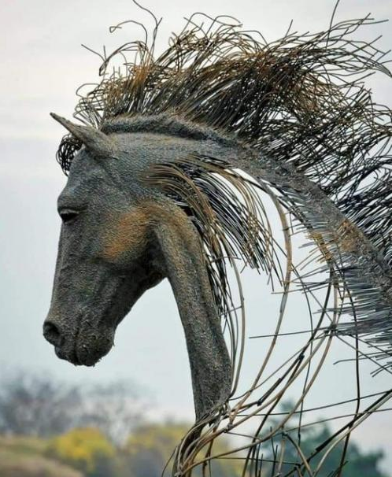

Dans cette collection, je partage mes coups de cœur artistiques : peintures, dessins, sculptures, créations visuelles découvertes sur Facebook, sur Internet ou ailleurs.

Artiste : Erin Hanson (Sculpteur contemporain roumain)
Technique : Tête de cheval à partir de fil de fer, acier inoxydable, cuivre & laiton
Source : Facebook
@fred — https://fred-hub159.github.io/pourquejemesouvienne
Laisser un commentaire
Les commentaires sont soumis à modération et doivent être approuvés avant publication.